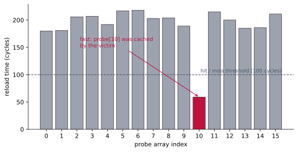
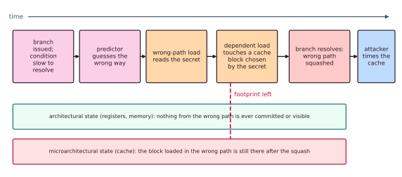

Chapter 10: Side Channels and Hardware Security¶
Every technique in this book exists to make a chip faster. Caches remember, branch predictors guess, out-of-order engines run ahead, and simultaneous multithreading shares. Each of these leaves a physical trace: a shadow in time, in power, in electromagnetic emission, or in shared microarchitectural state. A side-channel attack reads secrets out of those shadows without ever breaking the underlying algorithm.
This chapter surveys the field from a defensive point of view. It explains what leaks, why performance features are the very source of the leaks, and how architects and programmers close the holes. It is conceptual: it describes mechanisms, and contains no working exploit code. The mechanisms are what you need to understand in order to build systems that resist them.
You should know caches (Chapter 4) and speculation (Chapter 3).
10.1 What a side channel is¶
A cryptographic algorithm can be mathematically perfect (AES with a 256-bit key will not be brute-forced) and the system built on it can still leak the key. The reason is that software does not run on mathematics; it runs on physical hardware that takes time, draws current, gives off electromagnetic fields, warms up and changes shared internal state. When any of these observable quantities depends on the secret data being processed, an observer who can measure it recovers information that the algorithm never meant to reveal.
A safe-cracker does not need the combination: pressing an ear to the door, they listen for the faint click as each wheel falls into place. The lock's design is sound; its behaviour gives it away.
Definition: side channel
A side channel leaks secrets through unintended physical or microarchitectural signals (execution time, power draw, electromagnetic emission, acoustic noise, cache or predictor state) rather than through a flaw in the algorithm. The attacker does not defeat the cipher; they watch the machine running it.
A covert channel uses the same physical effects on purpose.
| Side channel | Covert channel | |
|---|---|---|
| Intent | Unintended: the victim leaks | Deliberate: someone signals on purpose |
| Parties | An unaware victim and an attacker | Two colluding programs |
| Goal | Steal a secret the victim holds | Sneak data past an isolation rule |
| Typical medium | Time, power, radiation, cache state | The same media, modulated on purpose |
Many attacks build a covert channel internally to carry a stolen value out. The threat model matters. A side channel is exploitable only if the attacker can measure the signal: from a co-resident program on the same core or machine (cloud virtual machines, browser JavaScript, a malicious app), or physically near the device (a smart card in a reader, an IoT node on a bench with an oscilloscope). For every attack, ask two questions: what secret-dependent signal leaks, and what measurement capability does the attacker need?
10.2 Timing channels¶
The simplest channel of all is a stopwatch. If the number of cycles a routine takes depends on secret data, then a stopwatch is a partial key-recovery oracle. The classic offender is a non-constant-time comparison. A naive comparison of a string or a message-authentication code returns as soon as it finds the first mismatching byte.
/* LEAKY: do not use for secrets. It returns as soon as one byte differs,
so its running time reveals how many leading bytes matched. */
bool compare(const uint8_t *a, const uint8_t *b, size_t n) {
for (size_t i = 0; i < n; i++)
if (a[i] != b[i]) return false; /* <-- the early exit leaks */
return true;
}
A guess whose first byte is right takes slightly longer to be rejected than a guess with no right bytes. An attacker tries all 256 values for byte 1, keeps the slowest, then moves on to byte 2, and so on.
Example 10.1: the cost of an early exit
For a 16-byte secret, the attacker needs about \(16 \times 256 = 4\,096\) tries instead of \(256^{16} = 2^{128} \approx 3.4 \times 10^{38}\). An impossible search becomes a quick one. (Averaging, about half as many tries per byte suffice; the order of magnitude is the point.) The same pattern appears in data-dependent branches, secret-indexed table lookups (early cache-based implementations of AES's S-boxes), variable-latency instructions (some early integer dividers, floating-point denormal numbers) and secret-length-dependent loops.
The fix is constant-time code: code that takes the same time whatever the secret is. Its rules are:
- no branches that depend on secret data;
- no memory addresses computed from secrets (no
table[secret]); - no instructions whose speed depends on their operands, used on secrets.
/* CONSTANT TIME: always looks at every byte, never branches on secrets. */
bool ct_equal(const uint8_t *a, const uint8_t *b, size_t n) {
uint8_t diff = 0;
for (size_t i = 0; i < n; i++)
diff |= a[i] ^ b[i]; /* collect differences; never stop early */
return diff == 0; /* one test, not dependent on where the bytes differed */
}
Compare with a branch-free accumulator; select with bit masks, not with if; process every byte regardless of early results. This discipline is why real cryptographic libraries go to great lengths (bit-sliced ciphers, masked table lookups, verified constant-time primitives), and why languages offer helpers such as a timing-safe equality function. "It is fast on average" is not a security property. The variation is the leak.
10.3 Cache-timing attacks¶
Timing becomes far more powerful once you notice that the cache is a secret-dependent time oracle shared between the victim and the attacker. A hit takes a few cycles and a miss hundreds, a difference that is easy to measure. If a victim's memory accesses depend on a secret, the set of blocks it leaves in a shared cache encodes that secret, and an attacker sharing the cache can read the pattern back by timing their own accesses. No bug in the victim is needed: the leak is a side effect of caching itself.
Three classic techniques exist, described here conceptually.
- Flush+Reload needs memory shared with the victim (for example a shared library page). The attacker flushes a target line from the cache, lets the victim run, then reloads the line and times it. A fast reload means that the victim touched it. It is precise (one line) and has little noise.
- Prime+Probe needs no shared memory. The attacker primes a cache set by filling it with their own lines, lets the victim run, then probes by re-timing those lines. Slow ones were evicted, so the victim used that set. It works across virtual machines on the last-level cache.
- Evict+Time times the victim as a whole, evicts a chosen set, and times the victim again. If the second run is slower, the victim depends on that set. It is coarse and noisy but needs neither shared memory nor a flush instruction.
Why this is hard to kill
The cache is supposed to be transparent: it must not change a program's result, only its speed. Side channels exploit exactly the part that the ISA leaves undefined: timing. And the whole point of a shared last-level cache is that it is shared; isolating it perfectly would erase its benefit. That tension, in which the feature is the vulnerability, is the recurring theme of this chapter.
Reading a Flush+Reload measurement¶
Imagine a victim whose single secret-dependent access is probe[secret], which pulls exactly one line of a 16-entry probe array into the cache. Architecturally nothing has leaked: the victim has simply computed. But the cache state now silently records which index it touched. The attacker reloads every entry of probe[] and records the time of each reload.

One entry comes back fast, here 59 cycles, because it is already cached: that is the line the victim brought in. Every other entry is slow (a miss, 180 to 220 cycles in this model). The single short bar identifies probe[10], so the secret is 10. The attacker recovered the value purely from timing, never reading the secret directly. (The numbers are an illustrative model, not measurements of any machine.)
Scale this up: in a real Flush+Reload against a table-based AES implementation, probe[] is the S-box, and the "secret index" is a function of a key byte and a known plaintext byte. Repeated over many encryptions, the statistics collapse onto the key. The model compresses all of that into one deterministic round so that the mechanism, victim caches, attacker times, fast means leaked, is unmistakable.
10.4 Speculative-execution attacks: Spectre and Meltdown¶
In 2018, Spectre and Meltdown showed that the out-of-order and speculative machinery of Chapter 3 is itself a side-channel engine. Recall the key idea there: to avoid stalling, the core executes past unresolved branches and unretired instructions on a guess, and only commits results in program order. If a guess was wrong, the mis-speculated instructions are squashed, and their architectural effects (registers and memory) are rolled back as if they never ran.
The gap that leaks
The rollback is architectural, not microarchitectural. Squashed instructions leave no register or memory trace, but the cache lines they loaded stay resident. This brief window between speculative execution and squash is called transient execution. It is long enough to (1) access a secret and (2) touch a cache line whose address depends on the secret. The secret is then read out of the cache with Flush+Reload or Prime+Probe. Speculation deletes the result, but not the footprint.

Spectre, in its bounds-check and branch-target variants, mistrains a predictor. The attacker repeatedly exercises a victim branch so that the branch predictor learns to go one way, then supplies an input that should go the other way (for example an out-of-bounds array index). The core speculatively takes the trained but wrong path, transiently reads memory outside the intended bounds, and uses that secret value to index a probe array, seeding the cache. The bounds check eventually resolves and squashes everything, but the cache footprint remains and is timed out. Crucially, Spectre makes a program attack itself: it turns the victim's own trusted code, or a just-in-time-compiled sandbox, into the transient gadget.
Meltdown exploits a different gap: the delay between a faulting load and the delivery of the fault. On affected cores, a user-mode load of a kernel address executed transiently and forwarded the fetched byte to dependent instructions before the permission fault retired. Those instructions encoded the byte into the cache; the fault then squashed the pipeline, but again the footprint survived. The net effect was to read kernel (privileged) memory from user space by racing the fault.
| Spectre | Meltdown | |
|---|---|---|
| Root cause | Speculating past a branch on a mistrained predictor | Using a load's result transiently before its permission fault takes effect |
| Barrier bypassed | A software bounds or type check | Hardware privilege (user to kernel) isolation |
| Reads | Within the victim's own address space | Across a privilege boundary (kernel memory) |
| Carried out by | The cache (Flush+Reload or Prime+Probe) | The cache (Flush+Reload) |
| Hardest part | Finding and training a usable gadget | Winning the fault race (many CPUs are immune by design) |
| Main mitigation | Speculation fences, retpolines, masked indices | Kernel page-table isolation (KPTI); fixed silicon |
A whole family followed the same recipe: find a transient window, make a secret-dependent access, and carry the result out through a microarchitectural channel. Foreshadow, the MDS group (RIDL, Fallout, ZombieLoad, which leak from internal buffers), LVI, Retbleed and others differ in windows and channels but share one structure. Understanding the mechanism is what lets you defend; a working exploit is not needed, and none is given here.
10.5 Physical channels, and other shared state¶
Hold the device, and power, radiation and deliberate glitches join the list.
Power and electromagnetic analysis¶
The dynamic power a CMOS circuit draws depends on how many bits toggle each cycle, as in the \(P \approx C V^2 f \alpha\) of Chapter 1 (with \(\alpha\) the activity factor), and that toggling depends on the data. Measure the current, or the electromagnetic field it induces with a near-field probe, and you are watching the computation's outline. This is the stock in trade of attacks on smart cards, TPMs, hardware wallets and embedded cryptography.
- Simple power analysis (SPA) reads the secret directly from one or a few power traces. In a naive square-and-multiply modular exponentiation (RSA), a 1 bit in the key triggers an extra multiply, an extra bump in the trace, so the trace spells out the key. The fix mirrors constant-time code: make the sequence of operations independent of the key (for example always multiply, then keep or discard the result).
- Differential and correlation power analysis (DPA, CPA) use statistics when the leak is buried in noise. Collect thousands of traces with known inputs, hypothesise a small chunk of the key, predict the leakage for each hypothesis (for example the Hamming weight of an S-box output), and correlate the prediction with the measured power. The correct guess correlates; the wrong ones do not.
Fault injection¶
Fault injection (glitching) is the active cousin: instead of only observing, the attacker perturbs the hardware to force an error. Techniques include voltage glitching (a brief dip in the supply), clock glitching (a too-short clock pulse), electromagnetic pulses, and a focused laser on a decapsulated die. One well-timed glitch can skip a single instruction, such as the branch that checks a signature at boot, or corrupt one step of a cipher so that comparing right and wrong outputs reveals the key. Defences are checks done twice, sensors that detect glitches, randomised timing and error-detecting arithmetic. These attacks need the device in hand, which narrows the threat model sharply, but for smart cards and IoT devices that is exactly what the attacker has.
Almost any shared state can leak¶
| Channel | Shared or stateful thing | What leaks |
|---|---|---|
| Branch predictor | Prediction tables | The victim's branch directions; also how Spectre misleads |
| TLB | Translation cache | Which pages the victim uses, even when data-cache attacks are mitigated |
| Execution ports | Units shared by SMT sibling threads | Which kinds of instruction the sibling thread runs |
| DRAM rows | Physical memory cells | Not a leak but a fault: Rowhammer |
Rowhammer breaks the usual boundary. Activating one DRAM row very rapidly disturbs its neighbours (charge leaks between densely packed cells) and flips their bits, with nothing but legal reads. It is a reliability failure of DRAM that becomes a security primitive, and it has been used to corrupt page tables. Defences are targeted row refresh in the DRAM, higher refresh rates, error-correcting memory (a partial defence) and guard rows.
10.6 Defences, and their price¶
There is no single fix, because the channels are diverse. Defence is layered, some in the programmer's hands, some in the operating system, some only in silicon. The unifying principle is to break the dependence between the secret and any observable signal, or to break the attacker's ability to observe.
| Defence | Layer | Against | Price |
|---|---|---|---|
| Constant-time programming | Software | Timing, cache timing | Careful coding |
| Cache partitioning or colouring | Hardware and OS | Prime+Probe, Flush+Reload | Less cache per program |
| Flushing at context switches | OS and hardware | Leftover cache and predictor state | Cold caches after every switch |
| Speculation barriers (fences) | Compiler, programmer | Spectre (bounds check) | Stalls the pipeline |
| Retpolines, index masking | Compiler | Spectre variants | Slower indirect jumps |
| Kernel page-table isolation | OS | Meltdown | Slower system calls |
| Masking and hiding | Hardware, cryptography | Power and radiation analysis | Area and power |
| SMT off for strangers | OS | Port contention, MDS | Half the threads |
| Silicon fixes | Hardware | Meltdown, MDS, Rowhammer | Only in new parts |
Notice the recurring cost: nearly every defence gives back some of the performance that the feature bought. Flushing on every context switch throws away warm caches; fences serialise the pipeline; disabling SMT halves a core's thread count; KPTI adds pressure on the TLB on every system call. Security here is not free. It is a deliberate trade against the very speed that most of this book chases.
10.7 The big lesson¶
The feature is the leak
Caches leak because they are shared and fast on reuse. Speculation leaks because it runs ahead of correctness. SMT leaks because it shares execution resources. Every microarchitectural side channel traces back to a performance optimisation: the same reuse, prediction and sharing that make chips fast are exactly what carries the secret out. Security cannot be bolted on afterwards. Isolation, constant-time behaviour and the option to turn sharing off must be designed into the microarchitecture from the start.
If the mathematics is secure, the chip is secure?
False. Provable cryptographic security assumes an idealised machine that reveals only its inputs and outputs. Real silicon also reveals time, power, emission and shared cache and predictor state, none of which the security proof accounts for. AES-256 is unbroken, yet a table-based implementation of AES has leaked keys through the cache, and RSA keys have fallen to a single power trace. The algorithm and its physical implementation are two different security problems.
Imagine a CPU that never speculates and shares nothing: no branch prediction, no shared caches, no SMT. It would be free of these microarchitectural channels, but it might run 5 to 10 times slower on everyday code (an illustrative estimate, not a measurement), pricing itself out of every market it was meant to protect. That is the real dilemma of the field: security and performance draw on the same microarchitectural budget, and "just turn the optimisations off" has a very large, very visible price tag. The engineering art is to find the minimum sharing and speculation that you must give up to close a specific channel.
10.8 Summary¶
- A side channel leaks secrets through unintended signals (time, power, radiation, cache state), not through the algorithm; a covert channel abuses the same media deliberately.
- Timing leaks demand constant-time code: no secret-dependent branches, addresses or variable-latency operations.
- Flush+Reload, Prime+Probe and Evict+Time read a victim's access pattern from a shared cache: the victim caches, the attacker times, and fast means leaked.
- Spectre and Meltdown abuse the transient window of speculative execution: it rolls back architectural state but not the cache footprint.
- Power and electromagnetic analysis (SPA, DPA, CPA) and fault injection attack physical implementations; the branch predictor, TLB, execution ports and Rowhammer add more channels.
- Defences span constant-time code, cache partitioning, flushing, fences and retpolines, KPTI, masking and hiding, and silicon fixes, and each gives back performance. The feature is the leak: security must be designed in.
10.9 Exercises¶
Exercise 10.1. Why does if (secret_bit) x = slow(); else x = fast(); leak, even though x is never printed?
Answer
The running time depends on the secret bit: anyone who can time the code learns the bit.
Exercise 10.2. After a wrong guess is squashed, what survives that Spectre relies on?
Answer
The cache state. Blocks loaded by the transient instructions stay in the cache after the squash, and their timing can be measured with Flush+Reload or Prime+Probe.
Exercise 10.3. Classify each as a side channel or a covert channel: (a) an attacker times a victim's AES encryptions to find its key; (b) two colluding apps on a phone pass data through contention for a shared cache although the operating system forbids them to communicate.
Answer
(a) Side channel: the victim is unaware and leaks unintentionally. (b) Covert channel: two cooperating parties deliberately signal through a shared physical effect to bypass an isolation rule.
Exercise 10.4. A secret token is 8 bytes long. How many guesses does the early-exit comparison need in the worst case with a timing attack, against a blind brute-force search? (Use \(8 \times 256\) for the first and \(256^8\) for the second.)
Answer
The timing attack needs about \(8 \times 256 = 2\,048\) guesses (256 per byte, one byte at a time). Brute force needs up to \(256^8 = 2^{64} \approx 1.8 \times 10^{19}\).
Exercise 10.5. In a Flush+Reload run on an 8-entry probe array the reload times in cycles are 205, 198, 61, 210, 192, 215, 201, 207. Which index did the victim touch, and what is the secret?
Answer
Index 2 (counting from 0), whose reload took 61 cycles, far below the others, which are all about 200: it was cached by the victim. The secret is 2.
Exercise 10.6. For each attack, name a defence from Section 10.6: (a) Meltdown; (b) Spectre by branch mistraining on a bounds check; (c) simple power analysis of a square-and-multiply loop; (d) Prime+Probe between two virtual machines.
Answer
(a) Kernel page-table isolation (or silicon that fixes the fault race). (b) A speculation fence after the bounds check, or masking the index so that even a mis-speculated access stays in bounds. (c) Make the operation sequence independent of the key bits (always multiply, then keep or discard the result), or mask the secret. (d) Cache partitioning (or colouring) so that the machines cannot evict each other's lines, or not co-scheduling mutually distrusting machines on shared cache resources.
Exercise 10.7 (practical). Write the early-exit compare and the constant-time ct_equal from Section 10.2 in C. Test both for correctness on at least six vectors (equal, first byte differs, last byte differs, and so on). On your own machine, time each function many thousands of times for a 32-byte secret against guesses that match 0, 8, 16 and 31 leading bytes. Plot the median times, and explain the plot in terms of the attack in the chapter.
Answer
The early-exit version's time grows with the number of matching leading bytes, a staircase; the constant-time version is flat apart from noise. Measurement noise is large, so use many repetitions and the median. Only measure code you wrote, on your own machine.
Exercise 10.8. A hypothetical processor has no speculation, no shared caches and no SMT. Name two things it gains and two things it loses.
Answer
It gains freedom from Spectre-style transient-execution channels, from cache and predictor-state channels, and from SMT port contention, and its behaviour is simpler to reason about. It loses much of its performance (branch prediction, caching and multithreading are what keep a fast core fed, and the loss on everyday code could be large) and, with it, its energy efficiency.